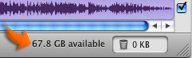

Monitoring hard disk space during importing and editing
It's important to monitor hard disk space as you import video and create your movie. One minute of DV footage uses about 220 MB of hard disk space, and high definition footage uses even more, so a movie with many video clips can use up a lot of disk space.
The disk space indicator at the bottom of the iMovie window shows how much disk space is available:

The disk space indicator changes to indicate how much free space you have left:
- Black: More than 400 MB of free space. This is enough to import about two minutes of DV footage.
- Yellow: Less than 400 MB of free space, enough for just under two minutes of DV video. Import carefully when you reach this point.
- Red: Less than 200 MB of free space, enough for one minute of DV video.
- 100 MB: Empty the iMovie Trash or remove unwanted files from your hard disk before importing more video.
- 50 MB: You can't import any more video. Remove unwanted clips from your project and empty the iMovie Trash before continuing.
If you need to create more space on your hard disk, you can delete files you no longer use.
Related Topics
Deleting unwanted files and footage
 Was this page helpful? Send feedback.
Was this page helpful? Send feedback.